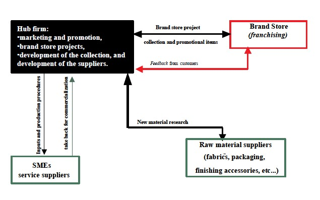
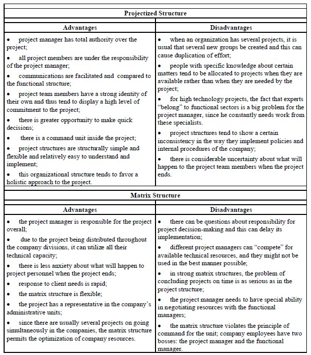
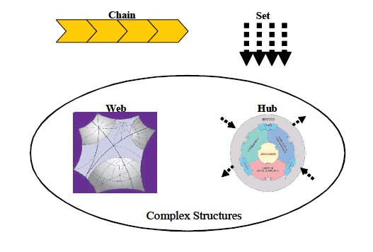

Of all the links of this chain, the clothing sector has great importance in the foreign market, since it represented 45.4% of the total in 2000. It should thus be stressed that the clothing industry responds for almost half of total exports resulting from other links in the chain.
Management of trademarks, development of fashion design and product concept, quality, and marketing became more and more important as critical factors for the success of the brazilian textile industry. Companies adopting the fashion vanguard as a competitive strategy try to distinguish their products, responding rapidly to market signals and fostering creativity, innovation and supply-chain management.
Each season, new collections with new fabrics, patterns, colors, and models are introduced, affecting the whole textile and clothing supply chain. The shorter the development cycle for new products, the greater the need to intensify the relations along the supply chain, so as to make the sector aware of the consumers’ needs.
Thus, there is a need to be more flexible. However, it should also be stressed that vanguard companies require that these chain linkages be willing to form long-term partnerships, providing exclusive patterns and finishing in small lots for each season, and trust and confidentiality are essential. These are mid to large-sized companies that maintain a quite balanced and close relationship with the hub company, involving joint development of new products (codesign).
Although patterns of competition present great variation according to the sector and consumer profile, it can be observed that the fashion vanguard companies have been strengthening their own brands or licensing foreign brands trying to obtain overseas markets. At the same time, these companies articulate a wide outsourced network of companies and retail stores, supported by information technology, with effective control of quality and delivery time. These companies, considered vanguard, are responsible for the quick introduction of product innovation in the brazilian market, in tune with the main fashion centers.
The hub companies give priority to product design, brand name, and marketing, and the rest of the production process is done according to an outsourcing
system typical of this sector. In this system, there is a service supplier without its own product line, working only under order for third parties. This service supplier makes available facilities, equipments, and workforce, while the hub firm provides all inputs and manufacture procedures. This kind of operation is very common in the cut-and-sew phase that can be done by different service suppliers. These suppliers are usually small, with close but standardized relationships, with a high degree of asymmetry in their relationships with hub firm and low bargaining power. The information system is basically done via the Internet, since these companies have a low degree of information technology.
The selling is done by brand stores, with intensive use of franchising systems. The brand is really a relevant issue for companies working with strategies. It must give to the chosen market segment a strong identification, the feeling of belonging to a given lifestyle (street, club, surfwear, etc.). Retailers play an important role, since both architecture and decoration must impart the same concept. Along with these factors, there is also the availability of a full line of products, including products and accessories, promotional items, distinctive packages, and media-covered events. Just as in the case of the service suppliers, the franchise-holding companies receive the complete detailed retailer project and are interconnected by an EDI information system. Franchisers have frequent relations with the hub company, but it seems more like a partnership, since they are important channels that should be kept close to the
Figure 3.6. Network of companies around the fashion design firm

target-market, working as a sensor of market needs and as disseminators of the hub companies’ concept.
The activities developed by the hub firm can be divided as follows: marketing and promotion, brand store projects, development of the collection, and suppliers. Figure 3.6 shows the relationship between companies articulated by a vanguard hub company. The width of the arrows represents the intensity of interactions among the networks companies and the shape of the arrow — full or striped — represents the nature of the relationship, standardized and asymmetric relationship, or balanced partnership.
Source: Adapted from Carvalho and Serra (1999).
1. Explain the different approaches to “chain”?
2. What is the difference between value chain and value system?
3. What is governance? What is the difference between global and local governance?
4. Define cluster.
5. Which are the elements of a structure of innovation capacity?
6. Considering the case in the section titled Fashion Design Networks, answer the following questions:
• Discuss this corporate network according to the various chain approaches presented.
• Which is the role of the vanguard company in this context? How does it affect the outsourced companies’ strategy?
Belussi, F. (1999). Policies for development of knowledge-intensive local production system.Cambridge Journal of Economics, 23, 729-747.
Bowersox, D. (1990, July/August). The strategic benefit of logistic.Harvard Business Review.
Bowersox, D. J. E., & Closs, D. J. (2001).Logística empresarial.Ed. São Paulo: Atlas.
Carvalho, M.M., & Serra, N.(1999). Competitive strategies: The Brazilian textile & garment industries. In Portland International Conference on Management of Engineering and Technology, Portland. Proceedings in CD, Portland: IEEE (PICMET’99).
Chesnais, F. (1996).A mundialização do capital. São Paulo:Xamã.
Courlet, C. (1993). Novas dinâmicas de desenvolvimento e sistemas industriais localizados. In Industrial Districts and Inter-Firm Co-Operation in Italy. Geneva, Switzerland: International Labour Organisation.
Duhan, S., Levy, M., & Powell, P. (2001). Information systems strategies in knowledge-based SMEs: The role of core competencies. European Journal of Information Systems, 10, 25-40.
Fleury, A.C.C., & Fleury, M.T.L. (2000).Estratégias empresariais e formação de competências: Um quebra-cabeça caleidoscópico da indústria brasileira.São Paulo: Ed. Atlas, 2A ed.
Furrer, O., & Thomas, H. (2000, December). The rivalry matrix: Understanding rivalry and competitive dynamics.European Management Journal, 18(6).
Gereffi, G. (1994).The organization of buyer-driven global commodity chains: How U.S. retailers shape overseas production networks.In GEREFFI, G.; KORZENIEWICZ, M. Commodity chains and global capitalism. Westport: Praeger.
Gereffi, G. (1999). International trade and industrial upgrading in the apparel commodity chain.Journal of International Economics, 48, 31-70.
Gereffi, G. (2001). Beyond the producer-driven / buyer-driven dichotomy: The evolution of global value chains in the internet era.IDS Bulletin, 32(3).
Ghemawat, P. (2001, September). Distance still matters: the hard rality of global expansion.Harvard Business Review,137-147.
Heizer & Render (1999).Operations management.Prentice-Hall.
Heskett, J.L., Jones, T.O., Loverman, G.W., Sasser, W.E., & Schlesinger, L.A. (1994, March/April). Putting the service-profit chain to work.Harvard Business Review,164-174.
Hollingsworth & Lindberg (1986). The governance of the american economy: markets, clans, hierarchis and associative behavior. In Streeck & Schimitter, Private Interest Government. New York: University Press.
Humphrey, J., & Schmitz, H. (2000). Governance and upgrading: Linking industrial cluster and global value chain research. IDS Working Paper No. 120, p.1-37, Institute of Development Studies, University of Sussex, Brighton.
Humphrey, J., & Schmitz, H. (2001). Governance in global value chains. IDS Bulletin 32, 19-29.
Jessop, B. (1998). The rise of governance and the risks of failure: the case of economic development. International Social Science Journal, 155, 29-45.
Krugman, P. (1995).Development, geography and economic theory.Cambridge, MA: MIT Press.
Porter, M., & Stern, S. (2001, Summer). Innovation: Location matters. MITSloan Management Review,28-36.
Porter, M.E. (1979, November/December). How Competitive forces shape strategy.Harvard Business Review,137-145.
Porter, M.E. (1998, November/December). Clusters and the new economics competitions.Harvard Business Review,77-90.
Porter, M.E., & Millar,V. (1985, July/August). How information gives you competitive advantage.Harvard Business Review,149-160.
Quinn, J.B., Doorley, T.L., & Paquette, P.C. (1990, March/April). Beyond products: Service-based strategy.Harvard Business Review,149-160.
Ruas, R. L., Gitahy, L., Rabelo, F., & Antunes, E. (1994, March).Inter-firm relations, collective efficiency and employment in two Brazilian clusters.International Labour Office. Working Paper n. 242.
Rucci, A.J., Kirn, S.P., & Quinn, R.T. (1998, January-February). The employee-customer profit chain at Sears.Harvard Business Review,82-97.
Schlesinger, L.A., & Heskett, J.L. (1991, September/October). The servicedriven service company.Harvard Business Review,1-20.
Schmitz, H. (1992, July).On the clustering of small firms.IDS Bulletin, 23(3).
Schmitz, H. (1997, March). Collective efficiency and increasing returns. IDS Working Paper, Brighton, IDS, n. 50.
Schmitz, H. (1999). Global competition and local cooperation in the Sinos Valley, Brazil.World Development,27(9).
Scott, A J., & Storper, M. (1988).Indústria de alta tecnologia e desenvolvimento regional: uma crítica e reconstrução.
Segenberger & Pyke (1990). Industrial districts and local economic regeneration: Research and policy issues. in PYKE, F. et alii. Geneva, International Labour Office.
Storper, M., & Harrison, B. (1991). Flexibility, hierarchy and regional developments: the changing structure of industrial production systems and their forms of governance in the 1990s.Research Policy, North-Holland,20(5).
Williamson, O. E. (1985). The economic institutions of capitalism. New York: Free Press.
Companies have undergone a process of transformation, organizing themselves to be able to make effective and agile responses to environmental problems and, especially, those having to do with competition and positioning in the market. These responses constitute a set of actions or activities that reflect the company’s competence in taking advantage of opportunities, and their capacity for rapid action, respecting time and cost limits and specifications (Rabechini & Carvalho, 2003). To do so, constructing project-oriented organizations and investing in management design tools and techniques is fundamental, and this has become a growing concern of companies.
Handy (1995) points out that organizations in the postindustrial era will be configured like “condominiums”, with groups of projects housed together, since what adds the most value to products and services are intelligent, rather than routine, activities (Fleury & Fleury, 2000).
According to Frame (1999), project management practices have consolidated since the 1990s, and several researchers cite this as an obligatory subject.
matter for companies that seek to develop and maintain competitive advantages. A good indicator of this growth is the presence of the PMI (Project Management Institute)in over 100 countries; it has certified around 25,000 project managers since the beginning of 2002 (Rabechini and Carvalho, 2003).
However, studies based in Brazilian companies show that few have formalized development of a management model for the process of innovation and projects (Rabechini et al., 2002).
The main concepts related to project management and the ways that a company can structure itself to reach maturity in its projects will be discussed in this chapter. The alignment between strategy and project management structure is also addressed.
For Rabechini, Jr. and Carvalho (1999), the concept of projects has been refined in recent years in order to establish a common understanding in organizations that work with this kind of undertaking.
There are several definitions of “project” available in the literature.ISO 10006 (1997) define project as a single process consisting of a group of coordinated and controlled activities with a beginning and end date, undertaken to achieve an objective, according to specific requirements, including time, cost, and resource limitations. For Tuman (1983), a project is an organization of dedicated people aiming to reach a specific purpose and goal that usually involves costs, single actions, or high risk undertakings which have to be complete by a certain date for an amount of money, within some expectation for performance. Finally, PMI (2000) defines project as a temporary endeavor undertaken to create a unique product, service or a result."
Two intrinsic concepts are perceptible in these definitions (Rabechine & Carvalho, 2003):the first one refers to temporality,i.e., all projects have a well-determined beginning and end; the second one refers to theiruniqueness or singularity, i.e., that the product or service, in some way be different than all those similar, accomplished earlier.
Even though not so explicit in all the definitions in Chart 1, the uncertainty and complexity inherent to projects are also fundamental issues to comprehending
this concept. In this sense, Maximiano (1997) and Sabbag (1999) present models which incorporate these issues.
In the model proposed by Sabbag (1999), these questions are dealt with by the Cube of Uncertainty, which is comprised of three variables: complexity, singularity, and precise objectives.
This model evaluates and proposes distinct management strategies depending on the type of project. According to Sabbag (1999), “different projects result in different cubes. For example, a road building project or a typical building construction, normally demonstrates high narrowness with regard to objectives and lower complexity and singularity.” On the other hand, “A typical research and development project or one to develop new software, can instead display high singularity and complexity, but show low narrowness of objectives” (Rabechini & Carvalho, 2003).
For Maximiano (1997), projects can be divided into four large categories according to their uncertainty and complexity. The higher degree of unknown, the greater the uncertainty and the greater the associated risk. Complexity can be evaluated through the degree of multi-disciplinarily needed for project execution, the diversity and volume of information to be processed, and the number of organizations involved, among other aspects.
According to Patah and Carvalho (2002), organizational structure should be dynamic, i.e., capable of rapid changes if the environment demands them. External factors involved can be an increase in competition in the market niche, a change in technology, or even the unpredictability of demand.
The traditional organization, called functional, is marked by divisions by departments, and displays some positive aspects, such as greater controllability and minimal internal conflict. Each department displays high technical dominion and facilitated internal communications, since each functionary reports to a director. Nevertheless, with the growing diversification demanded by the
market, it has become ever more difficult to manage projects inside companies with functional organization, since this system tends to serve the point of view of a department and not the point of view of the client.
Projectized and matrix structures arose as an alternative to the rigidity of the functional organizational structure. The matrix structure is a combination of the functional and project structures and can be divided into weak, balanced, and strong matrix (Patah & Carvalho, 2002). The main advantages and disadvantages of these two structures are summarized in Table 4.1.
Source: Adapted from Meredith and Mantel (2000)
Table 4.1. Advantages and disadvantages of the projectized and matrix structures

According to Kerzner (2001), in order to choose the most appropriate organizational structure to organize project activity, some factors that influence the decision should be considered: project size, duration, the organization’s experience in managing projects, the philosophy of the company’s upper management regarding project management, the physical location of the project, available resources, and specific project aspects.
Meredith and Mantel (2000) summed up the process of choosing an organizational structure for a project in six steps:
1. Define the specific results desired from the project;
2. Determine the key tasks for achieving the defined results and identify which company departments need to be involved;
3. Sequence and group key tasks in a logical fashion;
4. Determine to which project subsystem the task groups will be allocated;
5. Identify special project and company features that affect the manner in which the project should be organized;
6. Consider the above information in making the final decision in relation to the pros and cons of each type of organizational structure.
When the organizational structure is not selected in an appropriate manner, several problems can be diagnosed. According to Patah and Carvalho (2002b) some factors are indicative of problems, such as: projects don’t manage to meet time, cost, and other requirements; experts feel under-utilized; no one takes responsibility when the project tends toward failure; among others.
Mintzberg and Heyden (1999) warn, however, that organizational charts sometimes do not adequately reflect how people really organize at work. These authors present a new kind of organizational mapping called the organigraph which introduces new components called hubs and webs, in addition to the already used set and chain, as described in Figure 4.1.
For these authors, the new components —hubs and webs — can be defined in the following way:
"A hub serves as a coordinating center. It is any physical or conceptual point at which people, things, or information move."
Figure 4.1. Organigraph: hubs and webs (adapted from Mintzberg & Heyden, 1999)

"Webs...are grids with no center; they allow open-ended communication and continuous movement of people and ideas."(Mintzberg & Heyden, 1999, p. 5)
In addition to thinking about structure in the context of each project, the PMO (Project Management Office) is a structure intended to apply project management concepts within the organization and can take on various functions. The PMO can greatly aid the transformation of a company’s strategies into project management. Rollins (2003a) estimates that there are more than 50,000 PMOs of some type in the USA.
The PMO can be defined as an organizational entity established to aid project managers and organizational teams in implementing principles, practices, methodologies, tools, and techniques for project management (Daí, 2001).
Verzuh (1999) argues that if an organization only occasionally manages projects, there is no need to develop systematic abilities for project efforts. However, if an organization devotes a large part of its energy to project implementation, an inconsequential approach to project management leads to inefficiencies and can even be dangerous. With a larger number of projects being managed, the need for a PMO becomes more evident.
Four evolutions of the PMO model are proposed by Dinsmore (1998), Project Support Office (PSO), Project Management Center of Excellence (PMCOE), Program Management Office (PrgMO) and the Chief Project Officer (CPO). These models run from a simple sector to help project control (PSO) to a company department where all projects managed by the organization pass through (Patah et al., 2003).
When an organization undertakes autonomous projects, the project management function stays within the project itself. The source of information on project-management practices, in this case, comes from earlier experience and that of the project leaders. All costs for the project team are allocated to the project. The organization does not provide support and all project management functions are realized by the project team itself. The function of this kind of PMO is to manage the project in all its integrity. Thus, total responsibility for project success resides with the project manager.
The PSO provides technical and administrative support, tools and services to various project managers simultaneously, aiding in planning, programming, and dealing with changes of scope and in managing costs of the projects. The resources involved, both internal and external, are allocated to the projects depending on the nature and contractual structure of each. Sometimes PSO personnel are loaned to a project during its start up phase or even for the longterm. Responsibility for project success does not lie with the PSO, but with the project managers who use its services.
The Project Management Center of Excellence is a focal point for project experience, but does not take on responsibility for results. It appears as a general overhead expense, which is not allocated directly to projects. To a large extent, the task of the PMCOE is of a missionary nature: to disseminate ideas, convert non-believers, and transform followers into professionals, who are imbued with the methodologies. The center keeps the channels of communication open between the projects and the community outside of project management.
The Program Management Office manages the project managers and is, in the last instance, responsible for project results. In large corporations, the PrgMO concentrates its efforts on the priority projects. Other projects are managed by departments or units, and receive support from the PrgMO as needed. By nature, the PrgMO encompasses the functions of the PMCOE and, in some cases, of the PSO. For a PrgMO to function adequately, power, corporate priority, and control over the business environment are necessary.
The CPO’s responsibility is to care for and nourish the company’s project portfolio from the stage of business decision through final implementation. Among its activities, the CPO is responsible for the following: involvement in business decisions that result in new projects; strategic business planning; establishing priorities and negotiating resources for projects; supervising the implementation of strategic projects; assuming responsibility for the project management system at the company level; development of sensitization and project management capacities throughout the organization; periodic project evaluations, including the decision to discontinue them; managing the high level stakeholders; and facilitation and mentoring.
Verzuh (1999) also presents a classification of five different types of PMO:
• Center for Excellence;
• Project Support Office;
• Project Management Office;
• Program Management Office;
• Accountable Project Office.
The main purpose of a center of excellence is to maintain standards for project management and to promote their use in the organization. Despite the team frequently being called upon to lend consultation, it does not have a direct role in decision-making about the project. Instead, its authority within the organization derives almost exclusively from its knowledge of project management abilities. This means that, in addition to their knowledge, team members also have to be capable agents of change, persuasively offering advice to members of the organization at all levels.
In addition to maintaining and promoting project management standards and practices, the project support office (PSO) actively support a number of projects by, for example, creating and updating the project plan or its budget. Made up of planning analysts, the PSO is responsible for maintaining exact control while having responsibility for decisions about profit and loss. These planning analysts often become project managers. This means that contributing more project managers to the organization’s pool of talent is another contribution of the PSO.
Aproject management office (PMO) can offer support in creating schedules and budgets in the same way as a PSO. The main difference is that the PMO
will provide project managers for all the organization’s projects. Thus the PMO becomes a long-term base for those who want to make a career in project management. Due to being made up of many project managers, the PMO is able to reinforce project management standards. Despite PMOs being responsible for managing the salaries and professional growth of their project managers, they are not responsible for the success or failure of the project. This responsibility lies with the organization to which the project manager is allocated. On the other hand, if a company develops a series of failed projects, the PMO will also be held responsible, since it is the source of the company’s knowledge of project management.
Programs are a series of related projects. The main difference is that programs are so long that they develop some operational routines inside themselves. The role of the program management office is to provide knowledge in project management for the entire program, through the union of all projects together. The large program management office will have teams that carry out various project management functions such as scheduling, budgeting, and risk management. Like the PSO, the program management office is not directly responsible for meeting schedules and budgets; its role is mostly putting good management practices and projects into use and then supporting them. Differently than the PSO, the program management office participates in project decision-making. In contrast to the other form of project office, the program management office has a use life, i.e. it will be dismounted after the project is finished.
The accountable project office is the oldest, but in some cases, the most radical model of project office. Despite its being commonly referred to simply as the project office it is called the accountable project office to distinguish it from the other forms presented. It is called this because it has total responsibility for scheduling and for the quality and cost goals of the projects delegated to it. Like the project management office, it is a long-term sector for project managers, providing them with a career model and administrative management. It is made up of project managers and project support personnel.
It is worth stressing that, even though the PMO models appear to be evolutionary, they can have a stronger adherence to a specific type of organization depending on the role of project management in the type of corporate strategy.
It would be a mistake to think of the various project office forms as a progression that all companies should follow. This would suggest that a center for excellence is only the beginning and that the natural and proper evolution.